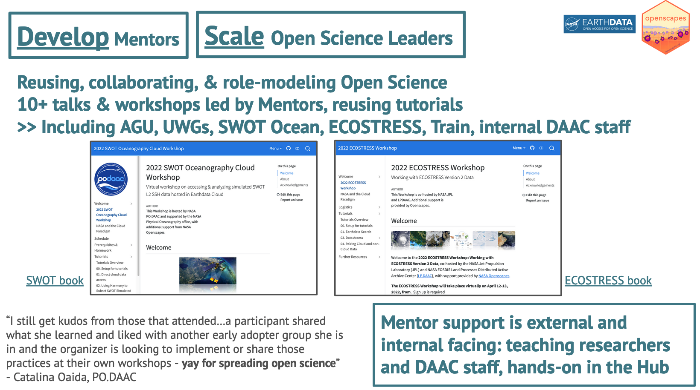
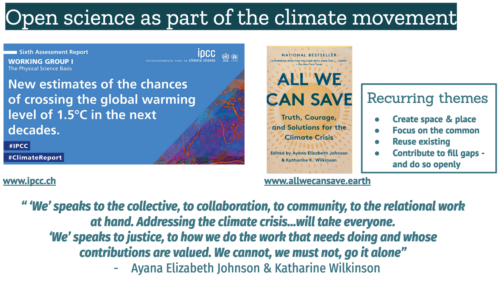

Quarto for reimagining, collaborating, and sharing
Setup
Setup
- This section contains some setup information to be used during the preparation of the talk
- Will be removed before finalizing the talk
Color palette
Tested for six common types of color blindness.

Video embed
Talk
Hi, I’m Julie
- Long-time user of RMarkdown, and also Quarto
- Changed my work-life and my life-life
- Theme: collaborating
Hi, I’m Mine
Unpolished ideas:
- I’m an educator
Quarto helps you reimagine, collaborate, and share
Quarto is something you can use if you love Rmd.
Quarto enables sharing (& organization?)
Quarto is something you can use if you’ve never used Rmd.
Quarto enables reuse & reimagining
What is Quarto
Quarto is something you can use if you love RMarkdown
Next generation R Markdown:
- It combines/unifies some “down” packages
- It also brings in Jupyter and other languages (python, Julia). provides that functionality even if you’re not coming from R ecosystem
DEMO: Flexibility in the formats
This slide will be replaced with a screen recording.
- Take .Rmd and change extension to .qmd
- The .Rmd will already have a table and a plot, palmerpenguins
- Knit it, then change to .qmd. Knit again
- Note code chunk options (or other high-level differences)
- Change output format to yml slides
- Add a _quarto.yml, render to website
- To hand-off to Julie: (a tiny website)
FAQ: knit vs render?
(this comes after changing the extension from .rmd to .qmd)
FAQ: from Jenny or Jo?
Story:
- teaching background
- teaching winter course - anectodote from art history student?
- Why is this interesting, is it diff from teaching Rmd? easier, harder? Not different?
OR: diff formats within R (web, slides, course web) I go between the formats a lot (Rmd 8 ways)
What is Quarto
Quarto is something you can use even if you’ve never used RMarkdown.
unpolished ideas:
- nicely-formatted code & text together to publish
- organizing your work as collections: documentation, code, notebooks
- collaborating framework (across R & Python, across coders and non-coders)
NASA Earthdata Cloud Cookbook
Image: screenshot of quarto book
1. Familiar and beautiful
Image: screenshot of quarto book, contributing page
2. Interoperability with tech
Image: screenshot of portion of _quarto.yml: .ipynbs not .Rmds
3. Interoperability with people
aka collaboration
Image: screenshots of Zoom
NASA Openscapes Framework
Supporting scientific researcher teams using NASA Earthdata as they migrate their workflows to the cloud.
Develop mentors • Empower research teams • Scale teaching
- find the common
- reuse existing
- contribute to fill gaps
- foster an open (psychologically safe) learning culture
DEMO: Flexibility in the tooling
This slide will be replaced with a screen recording.
- Render Mine’s example site in JupyterHub, quarto preview
- Add
.ipynb, workflow - Also open in VS Code, show
.qmd(cmd-shift-k to render [attention to other tool chains available])
Q&A - Quarto is a “philosophy” (and a document type)
From Allison Horst, Gavin
Quarto enables new ways of sharing
How academics share their teaching resources/ new avenues for publishing
- If it’s not easy to make a course website, you won’t
- Tooling that makes it easy to share with the world
- New way of getting credit
- Open sharing of knowledge. Other people can just take
- When it comes time for promotion/review, I say here it is
- Last 10% to tweak it for your context
DEMO: Part 2
This slide will be replaced with a screen recording.
visual editor
Short - “a few things I’ve learned transitioning Rmd -> quarto”,
Now to be a bit more principled about the transition (Change extension .rmd to .qmd and render to see it’s fine)
Change _bookdown.yml to _quarto.yml
My bookdown H1 headers were markdown
#Like This; quarto book will build but the rest of the headers don’t show up on the right TOC. change to yamltitle: Like This. Also will look right in the viewer
Story 2
Q&A 2
Quarto enables reuse & reimagining
- create-once-use-often
- less reinventing; focus your time on the science
Fostering a culture of reuse
placeholder slide
Fostering a culture of reuse
Interoperability (language, tooling, people) –>
Enabling collaborations, transferrable skills
Can collaborate with people sooner.
Tooling that makes things easy can help be culture change
Tooling > culture change bc repro and sharing
Creating “space & place”

Demo / Showcase culture of reuse:
- showcase a few additional quarto sites - establishing & role-modeling culture change
- open one in RStudio
- install with the CLI
- quarto pub?
Fostering a culture of engagement
placeholder slide - why this matters. Collaborate with people sooner.
Closing
- RMarkdown has helped code be part of something you share
- Tooling that makes things easy can help be culture change
- Tooling culture change bc repro and sharing
- Quarto could help bring about culture change across languages
Quarto examples and resources
- Mine’s Toronto talk
- Julie’s Quarto tutorial (building from 2016 Rmd tutorial)
Cutting room floor
The following slides won’t be in the final talk
(Champions landscape)